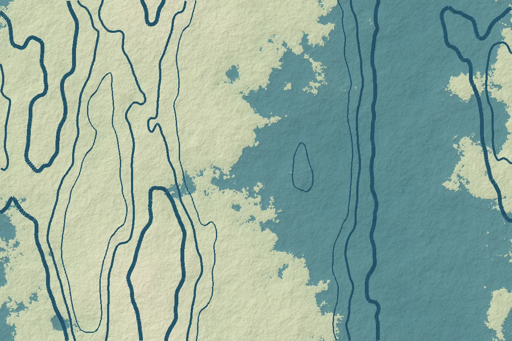

Climate adaptation and resilience in Bangladesh

Illustrative graphicBangladesh's exposure to climate hazards is well documented: a low-lying delta shaped by three major river systems, a long cyclone-prone coastline, and a dense population whose livelihoods depend heavily on water, land and seasonal patterns. Less often noted is how much policy infrastructure the country has built to respond.
A layered policy framework
National adaptation planning has developed over two decades. The National Adaptation Programme of Action (2005) identified urgent priorities; the Bangladesh Climate Change Strategy and Action Plan (2009) set out a broader programme; and the Bangladesh Delta Plan 2100, approved in 2018, established a long-term, adaptive framework for water, land and development in the delta.
The National Adaptation Plan of Bangladesh (2023–2050), prepared by the Ministry of Environment, Forest and Climate Change and submitted to the UNFCCC in late October 2022, is the current reference point. It organises adaptation across eight sectors, including water resources; disaster, social safety and security; agriculture; fisheries, aquaculture and livestock; urban areas; and ecosystems, wetlands and biodiversity. Government briefings on the plan describe 113 adaptation interventions addressing 14 climate stresses across 11 climate-stress regions, with an estimated investment need of about US$230 billion to 2050.
From hazard to risk
Contemporary climate science frames risk as the interaction of three components: the hazard (for example a storm surge or prolonged drought), exposure (the people, assets and ecosystems in harm's way) and vulnerability (their sensitivity and capacity to cope and adapt) (IPCC, 2022). This framing has practical consequences. Two villages facing the same flood depth can experience very different outcomes depending on housing quality, access to early warning, livelihood diversity and social networks.
It also explains why adaptation is as much a social and institutional challenge as an engineering one. Embankments and cyclone shelters are essential, but so are crop calendars, insurance, migration support, water governance and the protection of natural buffers such as mangroves and wetlands.
Where spatial evidence helps
- Vulnerability mapping at upazila or union level, combining hazard layers with census, household survey and infrastructure data, helps target limited resources.
- Flood and drought monitoring using radar and optical satellite data provides timely, consistent observations, including in places that are difficult to reach.
- Land-use change analysis shows where development is moving into hazard-prone land, or where natural buffers are being lost.
- River erosion tracking using multi-year imagery supports planning for affected char and riverbank communities.
Spatial indices are only as good as their indicators and weights. Composite vulnerability scores should be transparent about how variables were selected, normalised and combined, and should be checked against local knowledge.
Locally led adaptation
International practice increasingly emphasises adaptation in which communities and local institutions shape priorities and control resources. Bangladesh has a strong base for this through community-based disaster preparedness and local government institutions. Participatory methods such as focus group discussions, key informant interviews and participatory mapping complement remote sensing by revealing what the data cannot: which risks people consider most serious, which coping strategies already work, and where trust in institutions is weak.
Questions to ask of any adaptation project
- Is the climate risk clearly defined, with credible information on hazard, exposure and vulnerability?
- Does the intervention avoid shifting risk onto other groups or places, for example downstream?
- Are the most vulnerable groups, including women, older people and people with disabilities, explicitly considered?
- Is there a monitoring plan with indicators that can show whether resilience has actually improved?
- Is the design flexible enough to adjust as conditions and knowledge change?
Well-designed research can help answer each of these questions before money is committed, and help track results afterwards.
References and further reading
- Ministry of Environment, Forest and Climate Change, Government of Bangladesh (2022). National Adaptation Plan of Bangladesh (2023–2050). https://unfccc.int/sites/default/files/resource/NAP-Bangladesh-2023.pdf
- General Economics Division, Planning Commission, Government of Bangladesh (2018). Bangladesh Delta Plan 2100.
- Ministry of Environment and Forests, Government of Bangladesh (2009). Bangladesh Climate Change Strategy and Action Plan 2009.
- IPCC (2022). Climate Change 2022: Impacts, Adaptation and Vulnerability. Contribution of Working Group II to the Sixth Assessment Report. Cambridge University Press.
- PreventionWeb. Bangladesh: National adaptation plan (2023–2050). https://www.preventionweb.net/quick/92430